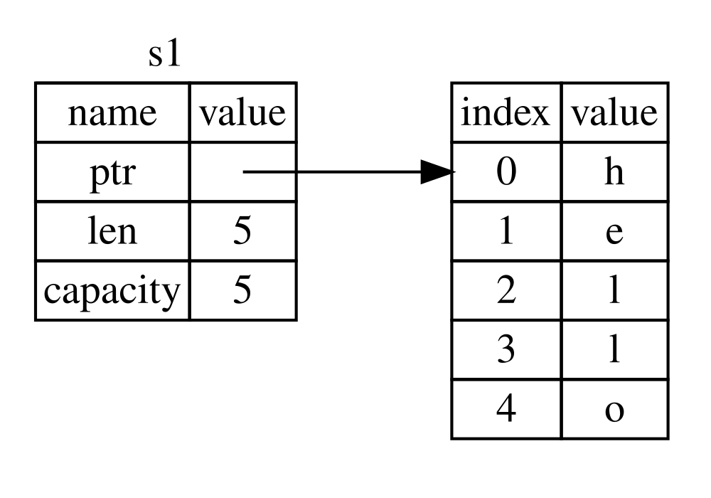
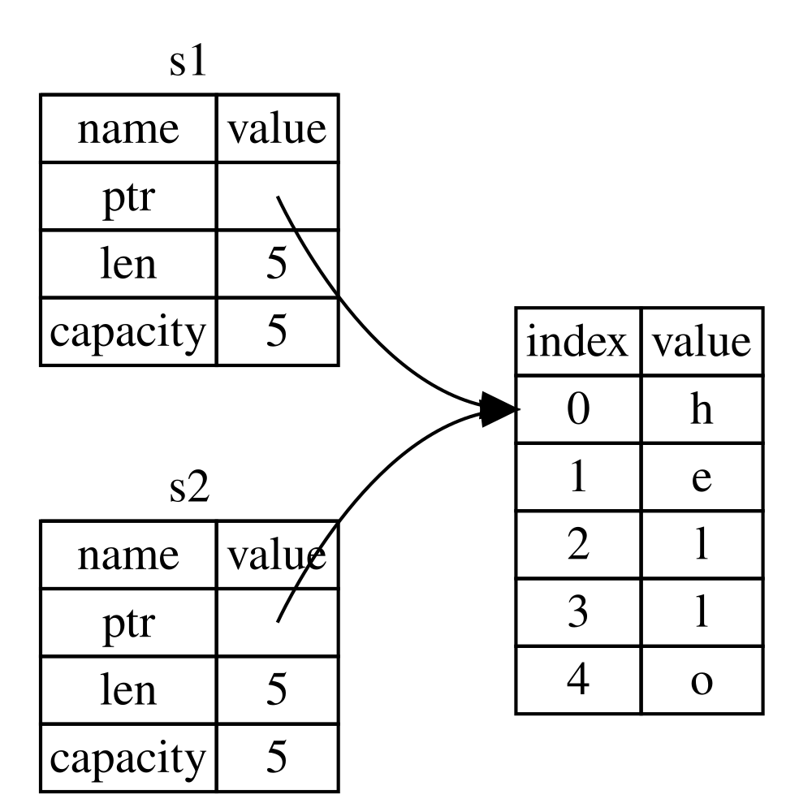

Keep the hot path borrowed and own the task boundary
The replay inspector accepts a slice of orders and returns references to the accepted records. It allocates space for pointers and its lookup table, while the original strings stay where they were. The lifetime on the result connects the view to the input. Dropping the source and then printing the view would leave a dangling pointer; the compiler rejects that ordering. When the view has had its last use the original vector can be moved, as the example later demonstrates.
fn unique<'a>(orders: &'a [Order]) -> Result<Vec<&'a Order>, &'a str> {
use std::collections::hash_map::Entry;
let mut seen = HashMap::new();
let mut accepted = Vec::new();
for order in orders {
match seen.entry(order.id()) {
Entry::Vacant(key) => {
key.insert(order.quantity());
accepted.push(order);
}
Entry::Occupied(key) if *key.get() == order.quantity() => {}
Entry::Occupied(_) => return Err(order.id()),
}
}
Ok(accepted)
}
Why does the HTTP handler move an owned Order into its database closure instead? The blocking job may still run after the request future is dropped. A reference into a handler stack frame cannot survive that schedule. Decode the owned string once, move it into the order, move the order into the closure, then borrow it for the database call. Adding clone at every boundary would obscure the one place that really needs ownership.
Recognise the lifetime of a view
A slice gives a function a pointer and length, so it can inspect a contiguous range without owning the allocation. That makes a borrowed parser attractive when every field is consumed before the buffer is reused. Now imagine returning a record to an async queue and immediately reading the next network frame into the same buffer. The queue needs a value whose lifetime extends beyond the parser call. Store owned fields, transfer ownership of the backing buffer, or process the record synchronously. A lifetime annotation cannot make the original storage live longer. Decide where the data must survive before deciding whether to copy it.
Download the order-intake Cargo project · docs.rs/tokio/1/tokio/task/fn.spawn_blocking.html
Understanding Ownership
Ownership is Rust’s most unique feature and has deep implications for the rest of the language. It enables Rust to make memory safety guarantees without needing a garbage collector, so it’s important to understand how ownership works. In this chapter, we’ll talk about ownership as well as several related features: borrowing, slices, and how Rust lays data out in memory.
What is Ownership?
What Is Ownership?
Ownership is a set of rules that govern how a Rust program manages memory. All programs have to manage the way they use a computer’s memory while running. Some languages have garbage collection that regularly looks for no-longer-used memory as the program runs; in other languages, the programmer must explicitly allocate and free the memory. Rust uses a third approach: Memory is managed through a system of ownership with a set of rules that the compiler checks. If any of the rules are violated, the program won’t compile. None of the features of ownership will slow down your program while it’s running.
Because ownership is a new concept for many programmers, it does take some time to get used to. The good news is that the more experienced you become with Rust and the rules of the ownership system, the easier you’ll find it to naturally develop code that is safe and efficient. Keep at it!
When you understand ownership, you’ll have a solid foundation for understanding the features that make Rust unique. In this chapter, you’ll learn ownership by working through some examples that focus on a very common data structure: strings.
The Stack and the Heap
Many programming languages don’t require you to think about the stack and the heap very often. But in a systems programming language like Rust, whether a value is on the stack or the heap affects how the language behaves and why you have to make certain decisions. Parts of ownership will be described in relation to the stack and the heap later in this chapter, so here is a brief explanation in preparation.
Both the stack and the heap are parts of memory available to your code to use at runtime, but they are structured in different ways. The stack stores values in the order it gets them and removes the values in the opposite order. This is referred to as last in, first out (LIFO). Think of a stack of plates: When you add more plates, you put them on top of the pile, and when you need a plate, you take one off the top. Adding or removing plates from the middle or bottom wouldn’t work as well! Adding data is called pushing onto the stack, and removing data is called popping off the stack. All data stored on the stack must have a known, fixed size. Data with an unknown size at compile time or a size that might change must be stored on the heap instead.
The heap is less organized: When you put data on the heap, you request a certain amount of space. The memory allocator finds an empty spot in the heap that is big enough, marks it as being in use, and returns a pointer, which is the address of that location. This process is called allocating on the heap and is sometimes abbreviated as just allocating (pushing values onto the stack is not considered allocating). Because the pointer to the heap is a known, fixed size, you can store the pointer on the stack, but when you want the actual data, you must follow the pointer. Think of being seated at a restaurant. When you enter, you state the number of people in your group, and the host finds an empty table that fits everyone and leads you there. If someone in your group comes late, they can ask where you’ve been seated to find you.
Pushing to the stack is faster than allocating on the heap because the allocator never has to search for a place to store new data; that location is always at the top of the stack. Comparatively, allocating space on the heap requires more work because the allocator must first find a big enough space to hold the data and then perform bookkeeping to prepare for the next allocation.
Accessing data in the heap is generally slower than accessing data on the stack because you have to follow a pointer to get there. Contemporary processors are faster if they jump around less in memory. Continuing the analogy, consider a server at a restaurant taking orders from many tables. It’s most efficient to get all the orders at one table before moving on to the next table. Taking an order from table A, then an order from table B, then one from A again, and then one from B again would be a much slower process. By the same token, a processor can usually do its job better if it works on data that’s close to other data (as it is on the stack) rather than farther away (as it can be on the heap).
When your code calls a function, the values passed into the function (including, potentially, pointers to data on the heap) and the function’s local variables get pushed onto the stack. When the function is over, those values get popped off the stack.
Keeping track of what parts of code are using what data on the heap, minimizing the amount of duplicate data on the heap, and cleaning up unused data on the heap so that you don’t run out of space are all problems that ownership addresses. Once you understand ownership, you won’t need to think about the stack and the heap very often. But knowing that the main purpose of ownership is to manage heap data can help explain why it works the way it does.
Ownership Rules
First, let’s take a look at the ownership rules. Keep these rules in mind as we work through the examples that illustrate them:
- Each value in Rust has an owner.
- There can only be one owner at a time.
- When the owner goes out of scope, the value will be dropped.
Variable Scope
Now that we’re past basic Rust syntax, we won’t include all the fn main() {
code in the examples, so if you’re following along, make sure to put the
following examples inside a main function manually. As a result, our examples
will be a bit more concise, letting us focus on the actual details rather than
boilerplate code.
As a first example of ownership, we’ll look at the scope of some variables. A scope is the range within a program for which an item is valid. Take the following variable:
#![allow(unused)]
fn main() {
let s = "hello";
}The variable s refers to a string literal, where the value of the string is
hardcoded into the text of our program. The variable is valid from the point at
which it’s declared until the end of the current scope. Listing 4-1 shows a
program with comments annotating where the variable s would be valid.
fn main() {
{ // s is not valid here, since it's not yet declared
let s = "hello"; // s is valid from this point forward
// do stuff with s
} // this scope is now over, and s is no longer valid
}In other words, there are two important points in time here:
- When
scomes into scope, it is valid. - It remains valid until it goes out of scope.
At this point, the relationship between scopes and when variables are valid is
similar to that in other programming languages. Now we’ll build on top of this
understanding by introducing the String type.
The String Type
To illustrate the rules of ownership, we need a data type that is more complex
than those we covered in the “Data Types” section
of Chapter 3. The types covered previously are of a known size, can be stored
on the stack and popped off the stack when their scope is over, and can be
quickly and trivially copied to make a new, independent instance if another
part of code needs to use the same value in a different scope. But we want to
look at data that is stored on the heap and explore how Rust knows when to
clean up that data, and the String type is a great example.
We’ll concentrate on the parts of String that relate to ownership. These
aspects also apply to other complex data types, whether they are provided by
the standard library or created by you. We’ll discuss non-ownership aspects of
String in Chapter 8.
We’ve already seen string literals, where a string value is hardcoded into our
program. String literals are convenient, but they aren’t suitable for every
situation in which we may want to use text. One reason is that they’re
immutable. Another is that not every string value can be known when we write
our code: For example, what if we want to take user input and store it? It is
for these situations that Rust has the String type. This type manages
data allocated on the heap and as such is able to store an amount of text that
is unknown to us at compile time. You can create a String from a string
literal using the from function, like so:
#![allow(unused)]
fn main() {
let s = String::from("hello");
}The double colon :: operator allows us to namespace this particular from
function under the String type rather than using some sort of name like
string_from. We’ll discuss this syntax more in the “Methods” section of Chapter 5, and when we talk about namespacing with
modules in “Paths for Referring to an Item in the Module
Tree” in Chapter 7.
This kind of string can be mutated:
fn main() {
let mut s = String::from("hello");
s.push_str(", world!"); // push_str() appends a literal to a String
println!("{s}"); // this will print `hello, world!`
}So, what’s the difference here? Why can String be mutated but literals
cannot? The difference is in how these two types deal with memory.
Memory and Allocation
In the case of a string literal, we know the contents at compile time, so the text is hardcoded directly into the final executable. This is why string literals are fast and efficient. But these properties only come from the string literal’s immutability. Unfortunately, we can’t put a blob of memory into the binary for each piece of text whose size is unknown at compile time and whose size might change while running the program.
With the String type, in order to support a mutable, growable piece of text,
we need to allocate an amount of memory on the heap, unknown at compile time,
to hold the contents. This means:
- The memory must be requested from the memory allocator at runtime.
- We need a way of returning this memory to the allocator when we’re done with
our
String.
That first part is done by us: When we call String::from, its implementation
requests the memory it needs. This is pretty much universal in programming
languages.
However, the second part is different. In languages with a garbage collector
(GC), the GC keeps track of and cleans up memory that isn’t being used
anymore, and we don’t need to think about it. In most languages without a GC,
it’s our responsibility to identify when memory is no longer being used and to
call code to explicitly free it, just as we did to request it. Doing this
correctly has historically been a difficult programming problem. If we forget,
we’ll waste memory. If we do it too early, we’ll have an invalid variable. If
we do it twice, that’s a bug too. We need to pair exactly one allocate with
exactly one free.
Rust takes a different path: The memory is automatically returned once the
variable that owns it goes out of scope. Here’s a version of our scope example
from Listing 4-1 using a String instead of a string literal:
fn main() {
{
let s = String::from("hello"); // s is valid from this point forward
// do stuff with s
} // this scope is now over, and s is no
// longer valid
}There is a natural point at which we can return the memory our String needs
to the allocator: when s goes out of scope. When a variable goes out of
scope, Rust calls a special function for us. This function is called
drop, and it’s where the author of String can put
the code to return the memory. Rust calls drop automatically at the closing
curly bracket.
Note: In C++, this pattern of deallocating resources at the end of an item’s
lifetime is sometimes called Resource Acquisition Is Initialization (RAII).
The drop function in Rust will be familiar to you if you’ve used RAII
patterns.
This pattern has a profound impact on the way Rust code is written. It may seem simple right now, but the behavior of code can be unexpected in more complicated situations when we want to have multiple variables use the data we’ve allocated on the heap. Let’s explore some of those situations now.
Variables and Data Interacting with Move
Multiple variables can interact with the same data in different ways in Rust. Listing 4-2 shows an example using an integer.
fn main() {
let x = 5;
let y = x;
}x to yWe can probably guess what this is doing: “Bind the value 5 to x; then, make
a copy of the value in x and bind it to y.” We now have two variables, x
and y, and both equal 5. This is indeed what is happening, because integers
are simple values with a known, fixed size, and these two 5 values are pushed
onto the stack.
Now let’s look at the String version:
fn main() {
let s1 = String::from("hello");
let s2 = s1;
}This looks very similar, so we might assume that the way it works would be the
same: That is, the second line would make a copy of the value in s1 and bind
it to s2. But this isn’t quite what happens.
Take a look at Figure 4-1 to see what is happening to String under the
covers. A String is made up of three parts, shown on the left: a pointer to
the memory that holds the contents of the string, a length, and a capacity.
This group of data is stored on the stack. On the right is the memory on the
heap that holds the contents.

Figure 4-1: The representation in memory of a String
holding the value "hello" bound to s1
The length is how much memory, in bytes, the contents of the String are
currently using. The capacity is the total amount of memory, in bytes, that the
String has received from the allocator. The difference between length and
capacity matters, but not in this context, so for now, it’s fine to ignore the
capacity.
When we assign s1 to s2, the String data is copied, meaning we copy the
pointer, the length, and the capacity that are on the stack. We do not copy the
data on the heap that the pointer refers to. In other words, the data
representation in memory looks like Figure 4-2.

Figure 4-2: The representation in memory of the variable
s2 that has a copy of the pointer, length, and capacity of s1
The representation does not look like Figure 4-3, which is what memory would
look like if Rust instead copied the heap data as well. If Rust did this, the
operation s2 = s1 could be very expensive in terms of runtime performance if
the data on the heap were large.

Figure 4-3: Another possibility for what s2 = s1 might
do if Rust copied the heap data as well
Earlier, we said that when a variable goes out of scope, Rust automatically
calls the drop function and cleans up the heap memory for that variable. But
Figure 4-2 shows both data pointers pointing to the same location. This is a
problem: When s2 and s1 go out of scope, they will both try to free the
same memory. This is known as a double free error and is one of the memory
safety bugs we mentioned previously. Freeing memory twice can lead to memory
corruption, which can potentially lead to security vulnerabilities.
To ensure memory safety, after the line let s2 = s1;, Rust considers s1 as
no longer valid. Therefore, Rust doesn’t need to free anything when s1 goes
out of scope. Check out what happens when you try to use s1 after s2 is
created; it won’t work:
fn main() {
let s1 = String::from("hello");
let s2 = s1;
println!("{s1}, world!");
}You’ll get an error like this because Rust prevents you from using the invalidated reference:
$ cargo run
Compiling ownership v0.1.0 (file:///projects/ownership)
error[E0382]: borrow of moved value: `s1`
--> src/main.rs:5:16
|
2 | let s1 = String::from("hello");
| -- move occurs because `s1` has type `String`, which does not implement the `Copy` trait
3 | let s2 = s1;
| -- value moved here
4 |
5 | println!("{s1}, world!");
| ^^ value borrowed here after move
|
help: consider cloning the value if the performance cost is acceptable
|
3 | let s2 = s1.clone();
| ++++++++
For more information about this error, try `rustc --explain E0382`.
error: could not compile `ownership` (bin "ownership") due to 1 previous error
If you’ve heard the terms shallow copy and deep copy while working with
other languages, the concept of copying the pointer, length, and capacity
without copying the data probably sounds like making a shallow copy. But
because Rust also invalidates the first variable, instead of being called a
shallow copy, it’s known as a move. In this example, we would say that s1
was moved into s2. So, what actually happens is shown in Figure 4-4.

Figure 4-4: The representation in memory after s1 has
been invalidated
That solves our problem! With only s2 valid, when it goes out of scope it
alone will free the memory, and we’re done.
In addition, there’s a design choice that’s implied by this: Rust will never automatically create “deep” copies of your data. Therefore, any automatic copying can be assumed to be inexpensive in terms of runtime performance.
Scope and Assignment
The inverse of this is true for the relationship between scoping, ownership, and
memory being freed via the drop function as well. When you assign a completely
new value to an existing variable, Rust will call drop and free the original
value’s memory immediately. Consider this code, for example:
fn main() {
let mut s = String::from("hello");
s = String::from("ahoy");
println!("{s}, world!");
}We initially declare a variable s and bind it to a String with the value
"hello". Then, we immediately create a new String with the value "ahoy"
and assign it to s. At this point, nothing is referring to the original value
on the heap at all. Figure 4-5 illustrates the stack and heap data now:

Figure 4-5: The representation in memory after the initial value has been replaced in its entirety
The original string thus immediately goes out of scope. Rust will run the drop
function on it and its memory will be freed right away. When we print the value
at the end, it will be "ahoy, world!".
Variables and Data Interacting with Clone
If we do want to deeply copy the heap data of the String, not just the
stack data, we can use a common method called clone. We’ll discuss method
syntax in Chapter 5, but because methods are a common feature in many
programming languages, you’ve probably seen them before.
Here’s an example of the clone method in action:
fn main() {
let s1 = String::from("hello");
let s2 = s1.clone();
println!("s1 = {s1}, s2 = {s2}");
}This works just fine and explicitly produces the behavior shown in Figure 4-3, where the heap data does get copied.
When you see a call to clone, you know that some arbitrary code is being
executed and that code may be expensive. It’s a visual indicator that something
different is going on.
Stack-Only Data: Copy
There’s another wrinkle we haven’t talked about yet. This code using integers—part of which was shown in Listing 4-2—works and is valid:
fn main() {
let x = 5;
let y = x;
println!("x = {x}, y = {y}");
}But this code seems to contradict what we just learned: We don’t have a call to
clone, but x is still valid and wasn’t moved into y.
The reason is that types such as integers that have a known size at compile
time are stored entirely on the stack, so copies of the actual values are quick
to make. That means there’s no reason we would want to prevent x from being
valid after we create the variable y. In other words, there’s no difference
between deep and shallow copying here, so calling clone wouldn’t do anything
different from the usual shallow copying, and we can leave it out.
Rust has a special annotation called the Copy trait that we can place on
types that are stored on the stack, as integers are (we’ll talk more about
traits in Chapter 10). If a type implements the Copy
trait, variables that use it do not move, but rather are trivially copied,
making them still valid after assignment to another variable.
Rust won’t let us annotate a type with Copy if the type, or any of its parts,
has implemented the Drop trait. If the type needs something special to happen
when the value goes out of scope and we add the Copy annotation to that type,
we’ll get a compile-time error. To learn about how to add the Copy annotation
to your type to implement the trait, see “Derivable
Traits” in Appendix C.
So, what types implement the Copy trait? You can check the documentation for
the given type to be sure, but as a general rule, any group of simple scalar
values can implement Copy, and nothing that requires allocation or is some
form of resource can implement Copy. Here are some of the types that
implement Copy:
- All the integer types, such as
u32. - The Boolean type,
bool, with valuestrueandfalse. - All the floating-point types, such as
f64. - The character type,
char. - Tuples, if they only contain types that also implement
Copy. For example,(i32, i32)implementsCopy, but(i32, String)does not.
Ownership and Functions
The mechanics of passing a value to a function are similar to those when assigning a value to a variable. Passing a variable to a function will move or copy, just as assignment does. Listing 4-3 has an example with some annotations showing where variables go into and out of scope.
fn main() {
let s = String::from("hello"); // s comes into scope
takes_ownership(s); // s's value moves into the function...
// ... and so is no longer valid here
let x = 5; // x comes into scope
makes_copy(x); // Because i32 implements the Copy trait,
// x does NOT move into the function,
// so it's okay to use x afterward.
} // Here, x goes out of scope, then s. However, because s's value was moved,
// nothing special happens.
fn takes_ownership(some_string: String) { // some_string comes into scope
println!("{some_string}");
} // Here, some_string goes out of scope and `drop` is called. The backing
// memory is freed.
fn makes_copy(some_integer: i32) { // some_integer comes into scope
println!("{some_integer}");
} // Here, some_integer goes out of scope. Nothing special happens.If we tried to use s after the call to takes_ownership, Rust would throw a
compile-time error. These static checks protect us from mistakes. Try adding
code to main that uses s and x to see where you can use them and where
the ownership rules prevent you from doing so.
Return Values and Scope
Returning values can also transfer ownership. Listing 4-4 shows an example of a function that returns some value, with similar annotations as those in Listing 4-3.
fn main() {
let s1 = gives_ownership(); // gives_ownership moves its return
// value into s1
let s2 = String::from("hello"); // s2 comes into scope
let s3 = takes_and_gives_back(s2); // s2 is moved into
// takes_and_gives_back, which also
// moves its return value into s3
} // Here, s3 goes out of scope and is dropped. s2 was moved, so nothing
// happens. s1 goes out of scope and is dropped.
fn gives_ownership() -> String { // gives_ownership will move its
// return value into the function
// that calls it
let some_string = String::from("yours"); // some_string comes into scope
some_string // some_string is returned and
// moves out to the calling
// function
}
// This function takes a String and returns a String.
fn takes_and_gives_back(a_string: String) -> String {
// a_string comes into
// scope
a_string // a_string is returned and moves out to the calling function
}The ownership of a variable follows the same pattern every time: Assigning a
value to another variable moves it. When a variable that includes data on the
heap goes out of scope, the value will be cleaned up by drop unless ownership
of the data has been moved to another variable.
While this works, taking ownership and then returning ownership with every function is a bit tedious. What if we want to let a function use a value but not take ownership? It’s quite annoying that anything we pass in also needs to be passed back if we want to use it again, in addition to any data resulting from the body of the function that we might want to return as well.
Rust does let us return multiple values using a tuple, as shown in Listing 4-5.
fn main() {
let s1 = String::from("hello");
let (s2, len) = calculate_length(s1);
println!("The length of '{s2}' is {len}.");
}
fn calculate_length(s: String) -> (String, usize) {
let length = s.len(); // len() returns the length of a String
(s, length)
}But this is too much ceremony and a lot of work for a concept that should be common. Luckily for us, Rust has a feature for using a value without transferring ownership: references.
References and Borrowing
References and Borrowing
The issue with the tuple code in Listing 4-5 is that we have to return the
String to the calling function so that we can still use the String after
the call to calculate_length, because the String was moved into
calculate_length. Instead, we can provide a reference to the String value.
A reference is like a pointer in that it’s an address we can follow to access
the data stored at that address; that data is owned by some other variable.
Unlike a pointer, a reference is guaranteed to point to a valid value of a
particular type for the life of that reference.
Here is how you would define and use a calculate_length function that has a
reference to an object as a parameter instead of taking ownership of the value:
fn main() {
let s1 = String::from("hello");
let len = calculate_length(&s1);
println!("The length of '{s1}' is {len}.");
}
fn calculate_length(s: &String) -> usize {
s.len()
}First, notice that all the tuple code in the variable declaration and the
function return value is gone. Second, note that we pass &s1 into
calculate_length and, in its definition, we take &String rather than
String. These ampersands represent references, and they allow you to refer to
some value without taking ownership of it. Figure 4-6 depicts this concept.

Figure 4-6: A diagram of &String s pointing at
String s1
Note: The opposite of referencing by using & is dereferencing, which is
accomplished with the dereference operator, *. We’ll see some uses of the
dereference operator in Chapter 8 and discuss details of dereferencing in
Chapter 15.
Let’s take a closer look at the function call here:
fn main() {
let s1 = String::from("hello");
let len = calculate_length(&s1);
println!("The length of '{s1}' is {len}.");
}
fn calculate_length(s: &String) -> usize {
s.len()
}The &s1 syntax lets us create a reference that refers to the value of s1
but does not own it. Because the reference does not own it, the value it points
to will not be dropped when the reference stops being used.
Likewise, the signature of the function uses & to indicate that the type of
the parameter s is a reference. Let’s add some explanatory annotations:
fn main() {
let s1 = String::from("hello");
let len = calculate_length(&s1);
println!("The length of '{s1}' is {len}.");
}
fn calculate_length(s: &String) -> usize { // s is a reference to a String
s.len()
} // Here, s goes out of scope. But because s does not have ownership of what
// it refers to, the String is not dropped.The scope in which the variable s is valid is the same as any function
parameter’s scope, but the value pointed to by the reference is not dropped
when s stops being used, because s doesn’t have ownership. When functions
have references as parameters instead of the actual values, we won’t need to
return the values in order to give back ownership, because we never had
ownership.
We call the action of creating a reference borrowing. As in real life, if a person owns something, you can borrow it from them. When you’re done, you have to give it back. You don’t own it.
So, what happens if we try to modify something we’re borrowing? Try the code in Listing 4-6. Spoiler alert: It doesn’t work!
fn main() {
let s = String::from("hello");
change(&s);
}
fn change(some_string: &String) {
some_string.push_str(", world");
}Here’s the error:
$ cargo run
Compiling ownership v0.1.0 (file:///projects/ownership)
error[E0596]: cannot borrow `*some_string` as mutable, as it is behind a `&` reference
--> src/main.rs:8:5
|
8 | some_string.push_str(", world");
| ^^^^^^^^^^^ `some_string` is a `&` reference, so it cannot be borrowed as mutable
|
help: consider changing this to be a mutable reference
|
7 | fn change(some_string: &mut String) {
| +++
For more information about this error, try `rustc --explain E0596`.
error: could not compile `ownership` (bin "ownership") due to 1 previous error
Just as variables are immutable by default, so are references. We’re not allowed to modify something we have a reference to.
Mutable References
We can fix the code from Listing 4-6 to allow us to modify a borrowed value with just a few small tweaks that use, instead, a mutable reference:
fn main() {
let mut s = String::from("hello");
change(&mut s);
}
fn change(some_string: &mut String) {
some_string.push_str(", world");
}First, we change s to be mut. Then, we create a mutable reference with
&mut s where we call the change function and update the function signature
to accept a mutable reference with some_string: &mut String. This makes it
very clear that the change function will mutate the value it borrows.
Mutable references have one big restriction: If you have a mutable reference to
a value, you can have no other references to that value. This code that
attempts to create two mutable references to s will fail:
fn main() {
let mut s = String::from("hello");
let r1 = &mut s;
let r2 = &mut s;
println!("{r1}, {r2}");
}Here’s the error:
$ cargo run
Compiling ownership v0.1.0 (file:///projects/ownership)
error[E0499]: cannot borrow `s` as mutable more than once at a time
--> src/main.rs:5:14
|
4 | let r1 = &mut s;
| ------ first mutable borrow occurs here
5 | let r2 = &mut s;
| ^^^^^^ second mutable borrow occurs here
6 |
7 | println!("{r1}, {r2}");
| -- first borrow later used here
For more information about this error, try `rustc --explain E0499`.
error: could not compile `ownership` (bin "ownership") due to 1 previous error
This error says that this code is invalid because we cannot borrow s as
mutable more than once at a time. The first mutable borrow is in r1 and must
last until it’s used in the println!, but between the creation of that
mutable reference and its usage, we tried to create another mutable reference
in r2 that borrows the same data as r1.
The restriction preventing multiple mutable references to the same data at the same time allows for mutation but in a very controlled fashion. It’s something that new Rustaceans struggle with because most languages let you mutate whenever you’d like. The benefit of having this restriction is that Rust can prevent data races at compile time. A data race is similar to a race condition and happens when these three behaviors occur:
- Two or more pointers access the same data at the same time.
- At least one of the pointers is being used to write to the data.
- There’s no mechanism being used to synchronize access to the data.
Data races cause undefined behavior and can be difficult to diagnose and fix when you’re trying to track them down at runtime; Rust prevents this problem by refusing to compile code with data races!
As always, we can use curly brackets to create a new scope, allowing for multiple mutable references, just not simultaneous ones:
fn main() {
let mut s = String::from("hello");
{
let r1 = &mut s;
} // r1 goes out of scope here, so we can make a new reference with no problems.
let r2 = &mut s;
}Rust enforces a similar rule for combining mutable and immutable references. This code results in an error:
Compiler rejection examplefn main() {
let mut s = String::from("hello");
let r1 = &s; // no problem
let r2 = &s; // no problem
let r3 = &mut s; // BIG PROBLEM
println!("{r1}, {r2}, and {r3}");
}Here’s the error:
$ cargo run
Compiling ownership v0.1.0 (file:///projects/ownership)
error[E0502]: cannot borrow `s` as mutable because it is also borrowed as immutable
--> src/main.rs:6:14
|
4 | let r1 = &s; // no problem
| -- immutable borrow occurs here
5 | let r2 = &s; // no problem
6 | let r3 = &mut s; // BIG PROBLEM
| ^^^^^^ mutable borrow occurs here
7 |
8 | println!("{r1}, {r2}, and {r3}");
| -- immutable borrow later used here
For more information about this error, try `rustc --explain E0502`.
error: could not compile `ownership` (bin "ownership") due to 1 previous error
Whew! We also cannot have a mutable reference while we have an immutable one to the same value.
Users of an immutable reference don’t expect the value to suddenly change out from under them! However, multiple immutable references are allowed because no one who is just reading the data has the ability to affect anyone else’s reading of the data.
Note that a reference’s scope starts from where it is introduced and continues
through the last time that reference is used. For instance, this code will
compile because the last usage of the immutable references is in the println!,
before the mutable reference is introduced:
fn main() {
let mut s = String::from("hello");
let r1 = &s; // no problem
let r2 = &s; // no problem
println!("{r1} and {r2}");
// Variables r1 and r2 will not be used after this point.
let r3 = &mut s; // no problem
println!("{r3}");
}The scopes of the immutable references r1 and r2 end after the println!
where they are last used, which is before the mutable reference r3 is
created. These scopes don’t overlap, so this code is allowed: The compiler can
tell that the reference is no longer being used at a point before the end of
the scope.
Even though borrowing errors may be frustrating at times, remember that it’s the Rust compiler pointing out a potential bug early (at compile time rather than at runtime) and showing you exactly where the problem is. Then, you don’t have to track down why your data isn’t what you thought it was.
Dangling References
In languages with pointers, it’s easy to erroneously create a dangling pointer—a pointer that references a location in memory that may have been given to someone else—by freeing some memory while preserving a pointer to that memory. In Rust, by contrast, the compiler guarantees that references will never be dangling references: If you have a reference to some data, the compiler will ensure that the data will not go out of scope before the reference to the data does.
Let’s try to create a dangling reference to see how Rust prevents them with a compile-time error:
fn main() {
let reference_to_nothing = dangle();
}
fn dangle() -> &String {
let s = String::from("hello");
&s
}Here’s the error:
$ cargo run
Compiling ownership v0.1.0 (file:///projects/ownership)
error[E0106]: missing lifetime specifier
--> src/main.rs:5:16
|
5 | fn dangle() -> &String {
| ^ expected named lifetime parameter
|
= help: this function's return type contains a borrowed value, but there is no value for it to be borrowed from
help: consider using the `'static` lifetime, but this is uncommon unless you're returning a borrowed value from a `const` or a `static`
|
5 | fn dangle() -> &'static String {
| +++++++
help: instead, you are more likely to want to return an owned value
|
5 - fn dangle() -> &String {
5 + fn dangle() -> String {
|
For more information about this error, try `rustc --explain E0106`.
error: could not compile `ownership` (bin "ownership") due to 1 previous error
This error message refers to a feature we haven’t covered yet: lifetimes. We’ll discuss lifetimes in detail in Chapter 10. But, if you disregard the parts about lifetimes, the message does contain the key to why this code is a problem:
this function's return type contains a borrowed value, but there is no value
for it to be borrowed from
Let’s take a closer look at exactly what’s happening at each stage of our
dangle code:
fn main() {
let reference_to_nothing = dangle();
}
fn dangle() -> &String { // dangle returns a reference to a String
let s = String::from("hello"); // s is a new String
&s // we return a reference to the String, s
} // Here, s goes out of scope and is dropped, so its memory goes away.
// Danger!Because s is created inside dangle, when the code of dangle is finished,
s will be deallocated. But we tried to return a reference to it. That means
this reference would be pointing to an invalid String. That’s no good! Rust
won’t let us do this.
The solution here is to return the String directly:
fn main() {
let string = no_dangle();
}
fn no_dangle() -> String {
let s = String::from("hello");
s
}This works without any problems. Ownership is moved out, and nothing is deallocated.
The Rules of References
Let’s recap what we’ve discussed about references:
- At any given time, you can have either one mutable reference or any number of immutable references.
- References must always be valid.
Next, we’ll look at a different kind of reference: slices.
The Slice Type
The Slice Type
Slices let you reference a contiguous sequence of elements in a collection. A slice is a kind of reference, so it does not have ownership.
Here’s a small programming problem: Write a function that takes a string of words separated by spaces and returns the first word it finds in that string. If the function doesn’t find a space in the string, the whole string must be one word, so the entire string should be returned.
Note: For the purposes of introducing slices, we are assuming ASCII only in this section; a more thorough discussion of UTF-8 handling is in the “Storing UTF-8 Encoded Text with Strings” section of Chapter 8.
Let’s work through how we’d write the signature of this function without using slices, to understand the problem that slices will solve:
fn first_word(s: &String) -> ?The first_word function has a parameter of type &String. We don’t need
ownership, so this is fine. (In idiomatic Rust, functions do not take ownership
of their arguments unless they need to, and the reasons for that will become
clear as we keep going.) But what should we return? We don’t really have a way
to talk about part of a string. However, we could return the index of the end
of the word, indicated by a space. Let’s try that, as shown in Listing 4-7.
fn first_word(s: &String) -> usize {
let bytes = s.as_bytes();
for (i, &item) in bytes.iter().enumerate() {
if item == b' ' {
return i;
}
}
s.len()
}
fn main() {}first_word function that returns a byte index value into the String parameterBecause we need to go through the String element by element and check whether
a value is a space, we’ll convert our String to an array of bytes using the
as_bytes method.
fn first_word(s: &String) -> usize {
let bytes = s.as_bytes();
for (i, &item) in bytes.iter().enumerate() {
if item == b' ' {
return i;
}
}
s.len()
}
fn main() {}Next, we create an iterator over the array of bytes using the iter method:
fn first_word(s: &String) -> usize {
let bytes = s.as_bytes();
for (i, &item) in bytes.iter().enumerate() {
if item == b' ' {
return i;
}
}
s.len()
}
fn main() {}We’ll discuss iterators in more detail in Chapter 13.
For now, know that iter is a method that returns each element in a collection
and that enumerate wraps the result of iter and returns each element as
part of a tuple instead. The first element of the tuple returned from
enumerate is the index, and the second element is a reference to the element.
This is a bit more convenient than calculating the index ourselves.
Because the enumerate method returns a tuple, we can use patterns to
destructure that tuple. We’ll be discussing patterns more in Chapter
6. In the for loop, we specify a pattern that has i
for the index in the tuple and &item for the single byte in the tuple.
Because we get a reference to the element from .iter().enumerate(), we use
& in the pattern.
Inside the for loop, we search for the byte that represents the space by
using the byte literal syntax. If we find a space, we return the position.
Otherwise, we return the length of the string by using s.len().
fn first_word(s: &String) -> usize {
let bytes = s.as_bytes();
for (i, &item) in bytes.iter().enumerate() {
if item == b' ' {
return i;
}
}
s.len()
}
fn main() {}We now have a way to find out the index of the end of the first word in the
string, but there’s a problem. We’re returning a usize on its own, but it’s
only a meaningful number in the context of the &String. In other words,
because it’s a separate value from the String, there’s no guarantee that it
will still be valid in the future. Consider the program in Listing 4-8 that
uses the first_word function from Listing 4-7.
fn first_word(s: &String) -> usize {
let bytes = s.as_bytes();
for (i, &item) in bytes.iter().enumerate() {
if item == b' ' {
return i;
}
}
s.len()
}
fn main() {
let mut s = String::from("hello world");
let word = first_word(&s); // word will get the value 5
s.clear(); // this empties the String, making it equal to ""
// word still has the value 5 here, but s no longer has any content that we
// could meaningfully use with the value 5, so word is now totally invalid!
}first_word function and then changing the String contentsThis program compiles without any errors and would also do so if we used word
after calling s.clear(). Because word isn’t connected to the state of s
at all, word still contains the value 5. We could use that value 5 with
the variable s to try to extract the first word out, but this would be a bug
because the contents of s have changed since we saved 5 in word.
Having to worry about the index in word getting out of sync with the data in
s is tedious and error-prone! Managing these indices is even more brittle if
we write a second_word function. Its signature would have to look like this:
fn second_word(s: &String) -> (usize, usize) {Now we’re tracking a starting and an ending index, and we have even more values that were calculated from data in a particular state but aren’t tied to that state at all. We have three unrelated variables floating around that need to be kept in sync.
Luckily, Rust has a solution to this problem: string slices.
String Slices
A string slice is a reference to a contiguous sequence of the elements of a
String, and it looks like this:
fn main() {
let s = String::from("hello world");
let hello = &s[0..5];
let world = &s[6..11];
}Rather than a reference to the entire String, hello is a reference to a
portion of the String, specified in the extra [0..5] bit. We create slices
using a range within square brackets by specifying
[starting_index..ending_index], where starting_index is the first
position in the slice and ending_index is one more than the last position
in the slice. Internally, the slice data structure stores the starting position
and the length of the slice, which corresponds to ending_index minus
starting_index. So, in the case of let world = &s[6..11];, world would
be a slice that contains a pointer to the byte at index 6 of s with a length
value of 5.
Figure 4-7 shows this in a diagram.

Figure 4-7: A string slice referring to part of a
String
With Rust’s .. range syntax, if you want to start at index 0, you can drop
the value before the two periods. In other words, these are equal:
#![allow(unused)]
fn main() {
let s = String::from("hello");
let slice = &s[0..2];
let slice = &s[..2];
}By the same token, if your slice includes the last byte of the String, you
can drop the trailing number. That means these are equal:
#![allow(unused)]
fn main() {
let s = String::from("hello");
let len = s.len();
let slice = &s[3..len];
let slice = &s[3..];
}You can also drop both values to take a slice of the entire string. So, these are equal:
#![allow(unused)]
fn main() {
let s = String::from("hello");
let len = s.len();
let slice = &s[0..len];
let slice = &s[..];
}Note: String slice range indices must occur at valid UTF-8 character boundaries. If you attempt to create a string slice in the middle of a multibyte character, your program will exit with an error.
With all this information in mind, let’s rewrite first_word to return a
slice. The type that signifies “string slice” is written as &str:
fn first_word(s: &String) -> &str {
let bytes = s.as_bytes();
for (i, &item) in bytes.iter().enumerate() {
if item == b' ' {
return &s[0..i];
}
}
&s[..]
}
fn main() {}We get the index for the end of the word the same way we did in Listing 4-7, by looking for the first occurrence of a space. When we find a space, we return a string slice using the start of the string and the index of the space as the starting and ending indices.
Now when we call first_word, we get back a single value that is tied to the
underlying data. The value is made up of a reference to the starting point of
the slice and the number of elements in the slice.
Returning a slice would also work for a second_word function:
fn second_word(s: &String) -> &str {We now have a straightforward API that’s much harder to mess up because the
compiler will ensure that the references into the String remain valid.
Remember the bug in the program in Listing 4-8, when we got the index to the
end of the first word but then cleared the string so our index was invalid?
That code was logically incorrect but didn’t show any immediate errors. The
problems would show up later if we kept trying to use the first word index with
an emptied string. Slices make this bug impossible and let us know much sooner
that we have a problem with our code. Using the slice version of first_word
will throw a compile-time error:
fn first_word(s: &String) -> &str {
let bytes = s.as_bytes();
for (i, &item) in bytes.iter().enumerate() {
if item == b' ' {
return &s[0..i];
}
}
&s[..]
}
fn main() {
let mut s = String::from("hello world");
let word = first_word(&s);
s.clear(); // error!
println!("the first word is: {word}");
}Here’s the compiler error:
$ cargo run
Compiling ownership v0.1.0 (file:///projects/ownership)
error[E0502]: cannot borrow `s` as mutable because it is also borrowed as immutable
--> src/main.rs:18:5
|
16 | let word = first_word(&s);
| -- immutable borrow occurs here
17 |
18 | s.clear(); // error!
| ^^^^^^^^^ mutable borrow occurs here
19 |
20 | println!("the first word is: {word}");
| ---- immutable borrow later used here
For more information about this error, try `rustc --explain E0502`.
error: could not compile `ownership` (bin "ownership") due to 1 previous error
Recall from the borrowing rules that if we have an immutable reference to
something, we cannot also take a mutable reference. Because clear needs to
truncate the String, it needs to get a mutable reference. The println!
after the call to clear uses the reference in word, so the immutable
reference must still be active at that point. Rust disallows the mutable
reference in clear and the immutable reference in word from existing at the
same time, and compilation fails. Not only has Rust made our API easier to use,
but it has also eliminated an entire class of errors at compile time!
String Literals as Slices
Recall that we talked about string literals being stored inside the binary. Now that we know about slices, we can properly understand string literals:
#![allow(unused)]
fn main() {
let s = "Hello, world!";
}The type of s here is &str: It’s a slice pointing to that specific point of
the binary. This is also why string literals are immutable; &str is an
immutable reference.
String Slices as Parameters
Knowing that you can take slices of literals and String values leads us to
one more improvement on first_word, and that’s its signature:
fn first_word(s: &String) -> &str {A more experienced Rustacean would write the signature shown in Listing 4-9
instead because it allows us to use the same function on both &String values
and &str values.
fn first_word(s: &str) -> &str {
let bytes = s.as_bytes();
for (i, &item) in bytes.iter().enumerate() {
if item == b' ' {
return &s[0..i];
}
}
&s[..]
}
fn main() {
let my_string = String::from("hello world");
// `first_word` works on slices of `String`s, whether partial or whole.
let word = first_word(&my_string[0..6]);
let word = first_word(&my_string[..]);
// `first_word` also works on references to `String`s, which are equivalent
// to whole slices of `String`s.
let word = first_word(&my_string);
let my_string_literal = "hello world";
// `first_word` works on slices of string literals, whether partial or
// whole.
let word = first_word(&my_string_literal[0..6]);
let word = first_word(&my_string_literal[..]);
// Because string literals *are* string slices already,
// this works too, without the slice syntax!
let word = first_word(my_string_literal);
}first_word function by using a string slice for the type of the s parameterIf we have a string slice, we can pass that directly. If we have a String, we
can pass a slice of the String or a reference to the String. This
flexibility takes advantage of deref coercions, a feature we will cover in
the “Using Deref Coercions in Functions and Methods” section of Chapter 15.
Defining a function to take a string slice instead of a reference to a String
makes our API more general and useful without losing any functionality:
fn first_word(s: &str) -> &str {
let bytes = s.as_bytes();
for (i, &item) in bytes.iter().enumerate() {
if item == b' ' {
return &s[0..i];
}
}
&s[..]
}
fn main() {
let my_string = String::from("hello world");
// `first_word` works on slices of `String`s, whether partial or whole.
let word = first_word(&my_string[0..6]);
let word = first_word(&my_string[..]);
// `first_word` also works on references to `String`s, which are equivalent
// to whole slices of `String`s.
let word = first_word(&my_string);
let my_string_literal = "hello world";
// `first_word` works on slices of string literals, whether partial or
// whole.
let word = first_word(&my_string_literal[0..6]);
let word = first_word(&my_string_literal[..]);
// Because string literals *are* string slices already,
// this works too, without the slice syntax!
let word = first_word(my_string_literal);
}Other Slices
String slices, as you might imagine, are specific to strings. But there’s a more general slice type too. Consider this array:
#![allow(unused)]
fn main() {
let a = [1, 2, 3, 4, 5];
}Just as we might want to refer to part of a string, we might want to refer to part of an array. We’d do so like this:
#![allow(unused)]
fn main() {
let a = [1, 2, 3, 4, 5];
let slice = &a[1..3];
assert_eq!(slice, &[2, 3]);
}This slice has the type &[i32]. It works the same way as string slices do, by
storing a reference to the first element and a length. You’ll use this kind of
slice for all sorts of other collections. We’ll discuss these collections in
detail when we talk about vectors in Chapter 8.
Summary
The concepts of ownership, borrowing, and slices ensure memory safety in Rust programs at compile time. The Rust language gives you control over your memory usage in the same way as other systems programming languages. But having the owner of data automatically clean up that data when the owner goes out of scope means you don’t have to write and debug extra code to get this control.
Ownership affects how lots of other parts of Rust work, so we’ll talk about
these concepts further throughout the rest of the book. Let’s move on to
Chapter 5 and look at grouping pieces of data together in a struct.
Source, edition and licence
The language reading is adapted under the MIT licence from The Rust Programming Language by Steve Klabnik, Carol Nichols and Chris Krycho, with contributions from the Rust community. The order-intake walkthroughs and lab are original to this edition.
Official chapter · Upstream sourceCopyright (c) 2010 The Rust Project Developers Permission is hereby granted, free of charge, to any person obtaining a copy of this software and associated documentation files (the "Software"), to deal in the Software without restriction, including without limitation the rights to use, copy, modify, merge, publish, distribute, sublicense, and/or sell copies of the Software, and to permit persons to whom the Software is furnished to do so, subject to the following conditions: The above copyright notice and this permission notice shall be included in all copies or substantial portions of the Software. THE SOFTWARE IS PROVIDED "AS IS", WITHOUT WARRANTY OF ANY KIND, EXPRESS OR IMPLIED, INCLUDING BUT NOT LIMITED TO THE WARRANTIES OF MERCHANTABILITY, FITNESS FOR A PARTICULAR PURPOSE AND NONINFRINGEMENT. IN NO EVENT SHALL THE AUTHORS OR COPYRIGHT HOLDERS BE LIABLE FOR ANY CLAIM, DAMAGES OR OTHER LIABILITY, WHETHER IN AN ACTION OF CONTRACT, TORT OR OTHERWISE, ARISING FROM, OUT OF OR IN CONNECTION WITH THE SOFTWARE OR THE USE OR OTHER DEALINGS IN THE SOFTWARE.